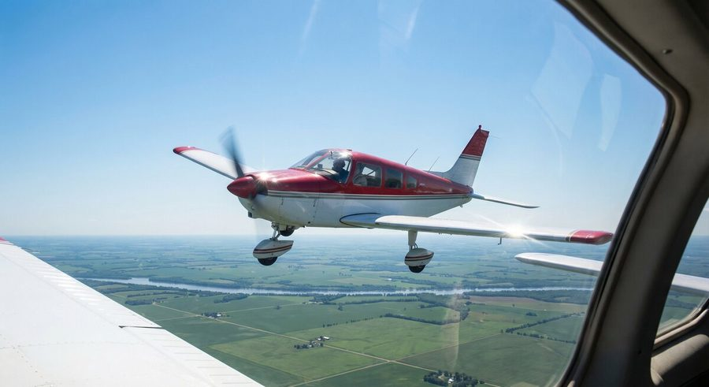

KestrelOne listens for nearby aircraft and puts them on the moving map you already fly with. Battery powered, no installation, no subscription.
Install firmware What it doesA self-contained receiver for General Aviation. It hears the traffic around you, works out where you are, and hands both to your electronic flight bag.

Receives and decodes 1090 MHz Mode S and ADS-B, tracking position, altitude, callsign and vertical rate for aircraft around you.

Broadcasts GDL90 over its own WiFi network. SkyDemon and other flight apps pick it up with no cables and nothing to configure.

A built-in GNSS receiver and barometer give your own position and pressure altitude, so traffic is shown relative to you.

Runs from an internal cell with USB-C charging and a fuel gauge. Nothing to wire into the aircraft.

Hardware is fitted for FLARM, OGN, PilotAware and FANET reception. The receiver is present; decoding is still being built.

One status light answers "is it working?", and a built-in web page shows traffic, signal quality and settings from any phone.
Firmware is installed straight from this page over USB — nothing to download and no tools to set up.
KestrelOne WiFi network.Choosing Erase device during install clears saved settings and WiFi credentials as well as the firmware. Leave it unticked to keep them.
| Traffic reception | 1090 MHz ADS-B and Mode S (DF17/18, DF11, DF0/4/5/16/20/21) |
|---|---|
| Conspicuity | 868 MHz receiver fitted — FLARM, OGN, PilotAware, FANET, ADS-L in development |
| Position | Multi-constellation GNSS with 1 PPS timing |
| Altitude | Barometric pressure altitude, 25 ft resolution |
| Output | GDL90 over WiFi (UDP 4000) — ownship, traffic and heartbeat |
| Network | Hosts its own access point, or joins an existing network |
| Power | Internal lithium cell, USB-C charging, battery gauge |
| Interface | Built-in web page for traffic, signal quality and settings |